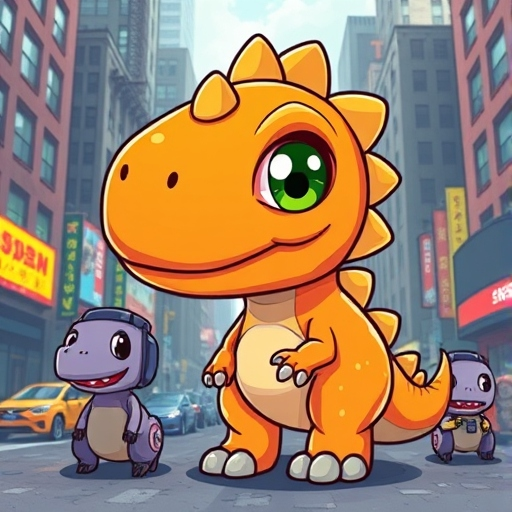

Where fashion, fun, and finance roar together in perfect harmony.
 Read White PaperDandy Dino Crypto merges prehistoric wonder with cutting-edge technology. Our charming orange dinosaur aims to simplify crypto while offering real value and unique experiences—be it through fashion partnerships, NFT collectibles, or innovative financial tools.
We believe that cryptocurrency should be accessible and engaging for everyone. That's why we're building a welcoming community that encourages creativity, collaboration, and a whole lot of roaring fun!
Access exclusive Dino-inspired fashion lines, limited-edition merch, and stylish NFTs.
We put our holders first. Collaborate on designs, propose new initiatives, and shape the Dino ecosystem together.
Our Proof-of-Stake approach focuses on sustainability, minimizing environmental impact while maximizing innovation.
Spend DinoCoin on high-end fashion, gaming assets, NFT marketplaces, and more, ensuring tangible value beyond speculation.
Whether you’re a dinosaur aficionado, fashion enthusiast, or crypto fan, there’s a place for you in our Dino family. Hop into our social channels, participate in contests, and earn rewards for being an active community member.